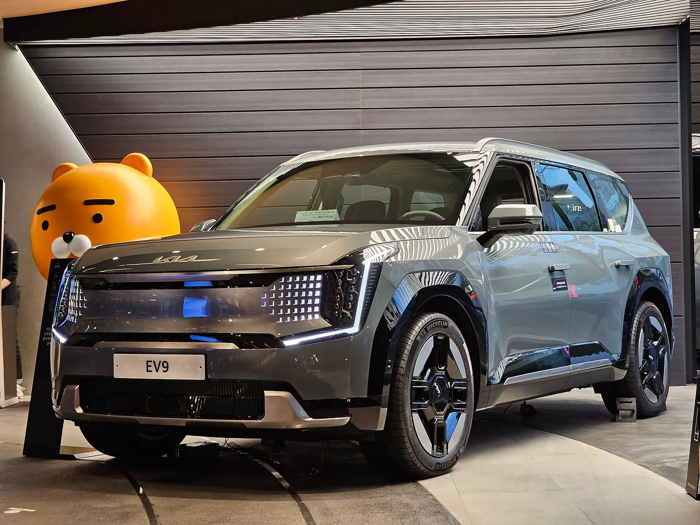
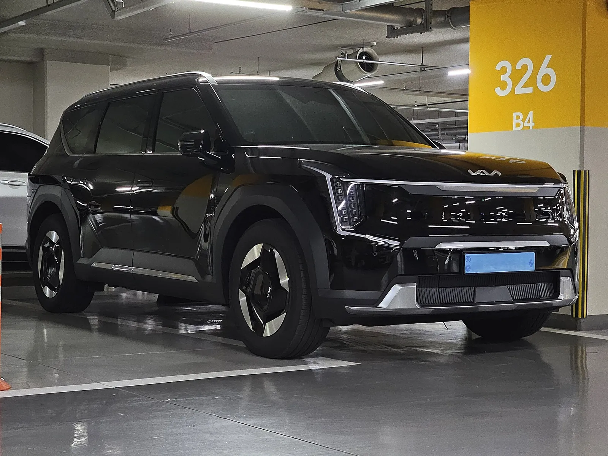
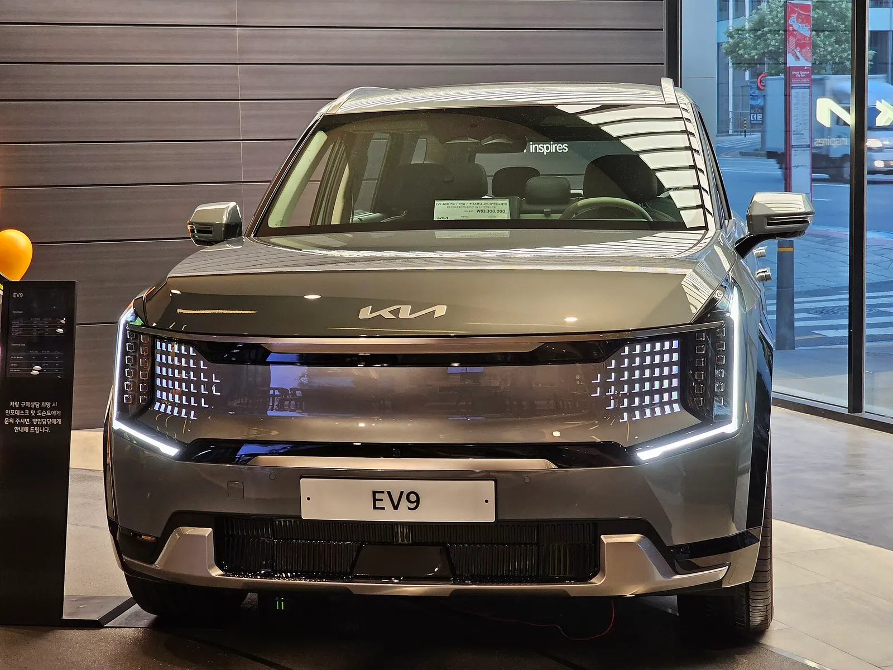
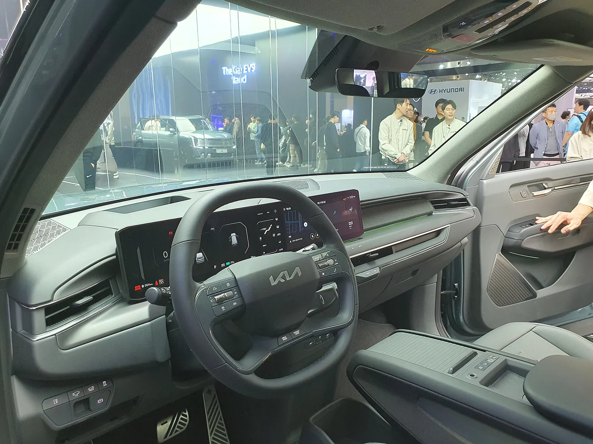
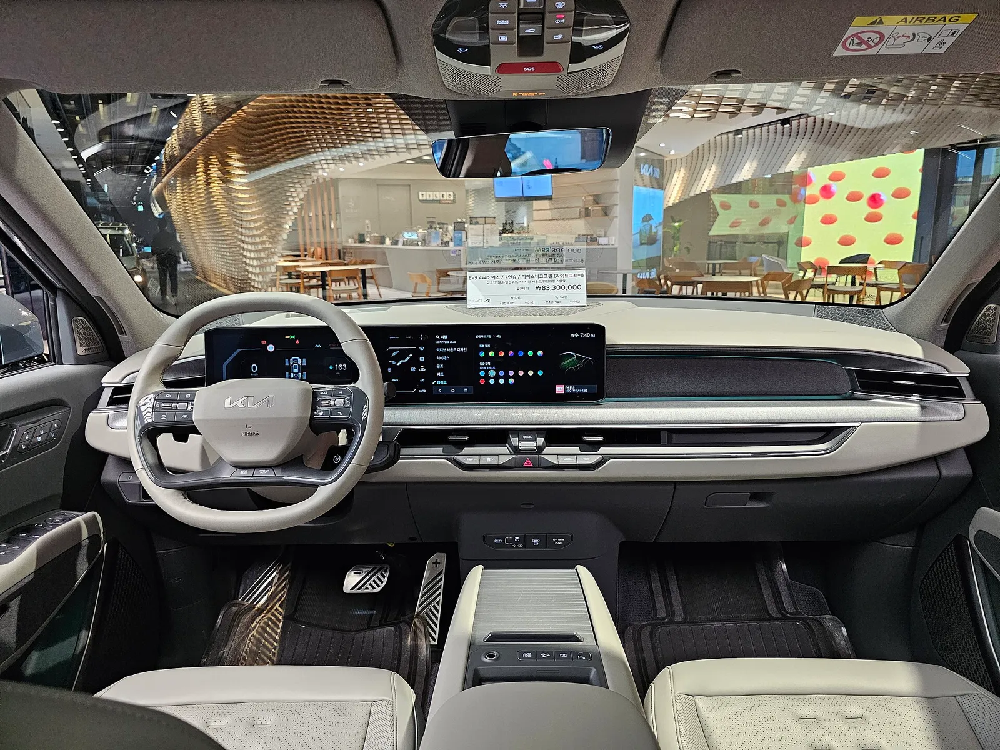
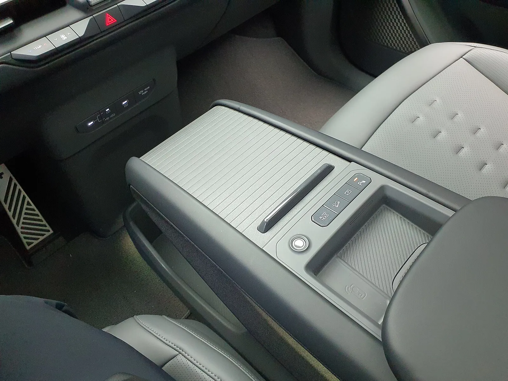
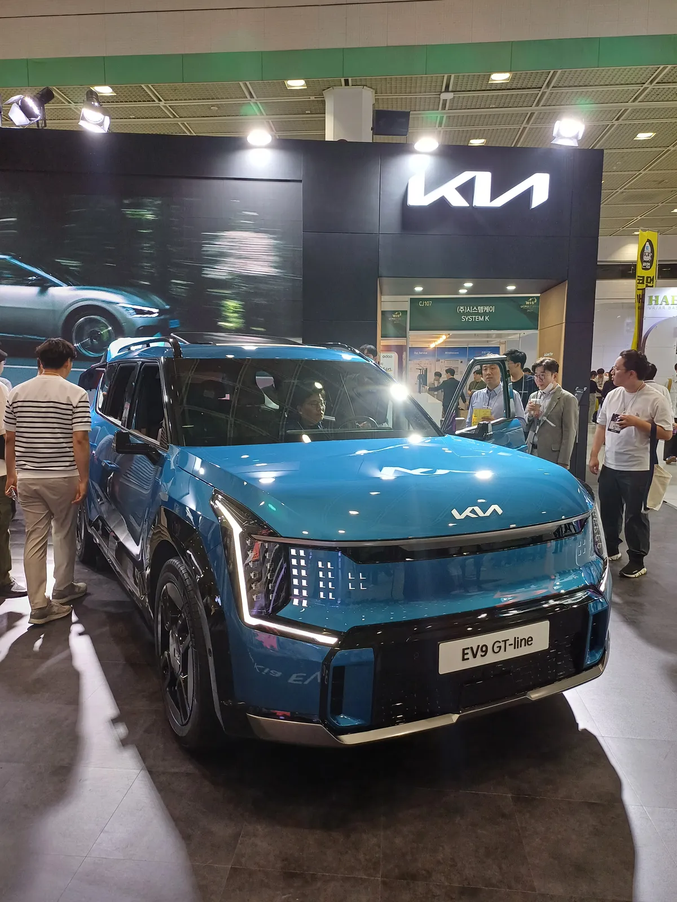
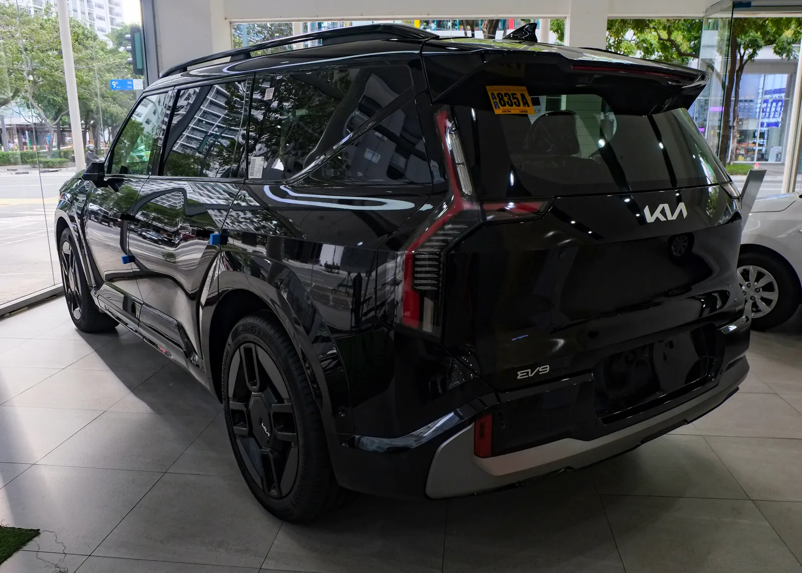
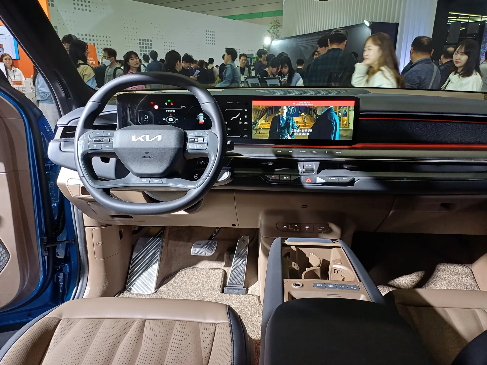
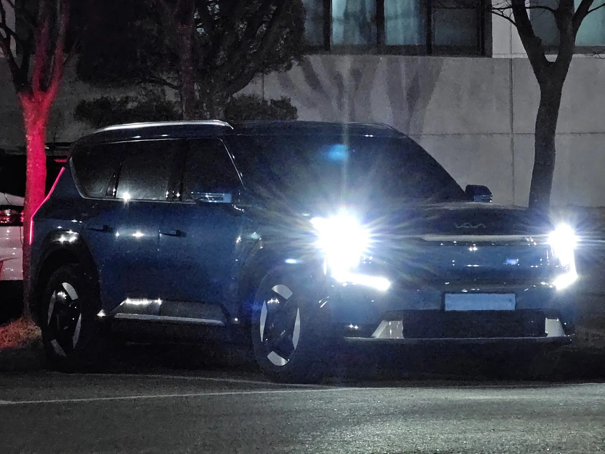

▲ 주차장에 세워진 검은색 EV9. 연식·트림은 사진으로 확정하지 않았다 ⓒ Damian B Oh (Wikimedia Commons, CC BY-SA 4.0)
"7천만 원대 전기 SUV가 5천만 원대로." 기아 EV9의 헤이딜러 10월 시세를 기아 공식 가격표와 나란히 놓으면 이 문장이 거의 그대로 성립한다. 현행 가격표에서 어스 롱레인지 2WD는 7,336만 원(세제혜택 후), 헤이딜러가 최근 3개월 무사고 차량으로 집계한 같은 구성의 중고 시세는 5,550만~5,790만 원이다. 그런데 계산해 보면 신차 대비 잔존율은 75.7~78.9%로, "반값 된다"는 전기차 통념과는 거리가 있다. 신차 값이 이미 내려와 있기 때문이다. 제목의 "1,600만 원대 차이"는 어스 롱레인지 2WD 기준 중고 중간값(5,670만 원)과 신차가의 격차(1,666만 원, 범위 1,546만~1,786만 원)를 가리킨다.
이 글은 EV9 중고가 신차 대비 얼마나 싼지, 보조금과 프로모션을 반영하면 격차가 얼마나 줄어드는지에 집중한다. 같은 대형 전기 SUV끼리의 사양·가격 비교는 아이오닉 9과 EV9 비교 기사에서, 중형 전기차의 감가 속도는 아이오닉5·모델Y 감가율 기사에서 다뤘다.
1. 신차 공식가와 중고 시세를 나란히 놓으면
기아 한국 홈페이지 EV9 가격표는 10월 1일 적용 기준으로 트림별 가격을 '세제혜택 전·후'로 나눠 싣는다. 아래 신차가는 모두 세제혜택 적용 후, 국고·지자체 보조금 적용 전 금액이다. 중고 시세는 헤이딜러 마켓이 최근 3개월 무사고 차량 데이터(극단값 제외, 분포 80%)를 바탕으로 10월 기준으로 공개한 범위다.
| 구성 | 현행 신차가(세제혜택 후) | 중고 시세 범위 | 시세 중간값(카프리즘 계산) | 신차 대비 격차 |
|---|---|---|---|---|
| 롱레인지 어스 2WD | 7,336 | 5,550~5,790 | 5,670 | 1,666 |
| 롱레인지 어스 4WD(AWD) | 7,689 | 5,690~6,450 | 6,070 | 1,619 |
| 전체 매물 범위 | 6,857(에어 2WD)~7,917(GT-Line 4WD) | 5,530~6,450 | - | - |
중간값은 헤이딜러가 밝힌 범위의 양 끝을 평균한 단순 계산이며 실제 거래 분포의 중앙값이 아니다. 헤이딜러는 AWD 어스가 매물의 62%를 차지한다고 밝혔는데, 그만큼 2WD 쪽 표본은 얇을 수 있다. 격차는 '현행 신차가 - 중고 중간값'이다.

▲ 전시장의 EV9 앞쪽 측면. 파일명 기준 4WD 어스 아이스버그 그린 차량이며 한국 전시 현장의 사진이다 ⓒ Damian B Oh (Wikimedia Commons, CC BY-SA 4.0)
2. 잔존율을 어떻게 잡느냐에 따라 달라지는 숫자
잔존율은 기준 가격을 무엇으로 잡느냐에 따라 5%p 가까이 달라진다. 2023년 6월 출시 당시(오토뷰 보도, 세제혜택 후)의 어스 2WD는 7,816만 원, 어스 4WD는 8,163만 원이었다. 지금 같은 트림 이름의 신차는 더 싸다. 중고 2024년식은 출시가와 비교하는 것이 '산 사람의 감가'에 가깝고, 현행 신차가와의 비교는 '지금 신차를 사는 사람의 선택'에 가깝다.
| 구분 | 중고 시세 | 현행 신차가 대비 잔존율 | 현행 신차가 대비 격차 | 2023년 출시가 대비 잔존율 | 출시가 대비 감가액 |
|---|---|---|---|---|---|
| 2WD 하단 | 5,550 | 75.7% | 1,786 | 71.0% | 2,266 |
| 2WD 중간값 | 5,670 | 77.3% | 1,666 | 72.5% | 2,146 |
| 2WD 상단 | 5,790 | 78.9% | 1,546 | 74.1% | 2,026 |
| 4WD 하단 | 5,690 | 74.0% | 1,999 | 69.7% | 2,473 |
| 4WD 중간값 | 6,070 | 78.9% | 1,619 | 74.4% | 2,093 |
| 4WD 상단 | 6,450 | 83.9% | 1,239 | 79.0% | 1,713 |
📍 계산의 가정
출시가는 2023년 6월 19일 출시 당시 오토뷰 보도(어스 2WD 7,816만 원, 어스 4WD 8,163만 원, 세제혜택 후)를 그대로 썼고, 현행 가격표의 어스 2WD(7,336만 원)·어스 4WD(7,689만 원)와는 사양 구성이 같다고 단정할 수 없다. 2026년형에는 라이트 트림 신설과 편의사양 추가가 있었다. 헤이딜러 블로그는 대상 연식을 "2024~2026년식"으로 적었고, 예시 매물 두 대는 모두 2024년식(주행 약 5.7만 km 6,050만 원, 약 6.0만 km 5,990만 원, 트림은 확인하지 못함)이다. 시세 범위가 여러 연식을 섞은 값이므로 특정 연식의 시세로 읽으면 안 된다. 2년 경과(2024년식 가정)로 연 환산하면 출시가 대비 감가는 어스 2WD 중간값 기준 연 약 1,073만 원이지만, 연식 혼재 때문에 참고치로만 본다.
가장 눈에 띄는 대목은 격차의 폭이다. 어스 4WD 상단(6,450만 원)은 잔존율 83.9%로 현행 신차가에 거의 붙어 있고, 하단(5,690만 원)은 74.0%다. 같은 트림 안에서도 연식·주행거리·옵션에 따라 760만 원의 편차가 있다. 이 편차의 원인이 무엇인지는 헤이딜러가 공개한 범위만으로는 가를 수 없다.

▲ 같은 주차장의 다른 각도. EV9의 각진 차체와 수직형 램프 구성이 드러난다 ⓒ Damian B Oh (Wikimedia Commons, CC BY-SA 4.0)
3. 출처마다 시세가 다른 이유 — 비교할 때 조심할 것
이번에 확인한 중고 시세 자료는 시점과 기준이 모두 다르다. 숫자를 그대로 이어 붙이면 "시세가 올랐다"거나 "내렸다"는 잘못된 결론이 나온다.
| 출처 | 기준 시점 | 제시 범위(만 원) | 기준·한계 |
|---|---|---|---|
| 헤이딜러 블로그 | 10월(페이지 표기) | 전체 5,530~6,450 / 어스 2WD 5,550~5,790 / 어스 AWD 5,690~6,450 | 최근 3개월 무사고 차량 데이터, 대상 연식 2024~2026년식. 이 글의 기준 자료 |
| ino1 구매 가이드 | 4월 30일 | 주력 4,940~6,500, 2024 어스 2WD 중간 5,260, 2024 4WD GT-Line 중간 6,450 | 2024년식 중심, 산출 방식 미공개. 5개월 전 자료 |
| 검색 요약상 7월 자료 | 7월 | 5,364~6,586 / 롱레인지 어스 5,430~6,060 | 원문을 직접 열어 검증하지 못함(참고만) |
4월 자료의 어스 2WD 중간값(5,260만 원)과 10월 헤이딜러 범위(5,550만~5,790만 원)를 비교하면 "반년 새 올랐다"고 읽히지만, 출처와 집계 방식이 달라 같은 선에서 비교할 수 없다. 시계열 추세는 같은 출처의 월별 자료로만 말할 수 있다. 이 글은 추세를 단정하지 않는다. 국산차 전반의 9월 시세 흐름은 9월 중고차 시세 기사에서, 엔카 기준 전기차 흐름은 엔카 9월 시세 기사에서 다뤘다.

▲ 전시장의 EV9 정면. 수직 픽셀형 주간주행등이 EV9의 얼굴이다 ⓒ Damian B Oh (Wikimedia Commons, CC BY-SA 4.0)
✅ 중고 시세 숫자를 볼 때 확인할 것
· 기준 시점: 월이 같은지, 최근 3개월 평균인지
· 무사고 한정 여부: 헤이딜러는 무사고만 집계, 사고차가 섞이면 하단이 내려간다
· 2WD/4WD·트림 구분: 어스 4WD와 GT-Line은 격차가 크다
· 연식·주행거리: 범위 전체의 분포는 확인하지 못했고 예시 매물 2건(2024년식)만 공개됐다
4. 보조금·프로모션을 반영하면 신차와의 격차는 얼마나 줄까
중고차는 보조금이 없다. 반면 신차는 세제혜택 후 가격에서 국고·지자체 보조금과 프로모션이 더 빠진다. 소비자가 실제로 비교하는 값은 표시가가 아니라 이 합산 후 금액이다. 다만 EV9 보조금은 지역·예산·옵션 구성에 따라 크게 달라지고, 공식 지원금 조회를 이번에 직접 하지 못해 시나리오 가정으로 계산했다.
| 시나리오 | 가정 | 신차 실구매가 | 중고 중간값과 격차 | 중고 중간값 / 신차 실구매가 |
|---|---|---|---|---|
| A. 표시가 | 보조금·할인 없음 | 7,336 | 1,666 | 77.3% |
| B. 보조금만 | 보조금 합계 370만 원 가정 | 6,966 | 1,296 | 81.4% |
| C. B + 기본혜택 | 기본혜택 150만 원 추가 | 6,816 | 1,146 | 83.2% |
| D. B + 조건부 혜택 일부(EV Change 80 + 트레이드인 70 + 기본 150) | 기본 150 + EV Change 80 + 트레이드인 70 = 300만 원 | 6,666 | 996 | 85.1% |
📍 보조금·할인 가정의 출처와 한계
보조금 370만 원은 외부 보조금 안내 사이트(겟차)가 어스 롱레인지 6인승 사례로 제시한 국고 301만 원+지자체 약 69만 원을 합친 값이다. 공식 조회 결과가 아니고, 해당 페이지가 기준으로 삼은 출고가(7,385만 원)가 기아 현행 가격표의 어스 2WD(7,336만 원)와 다르며 지역도 특정되지 않는다. 같은 페이지의 '예상 실구매가'(약 7,240만 원)도 출고가에서 보조금 합계를 뺀 값(약 7,015만 원)과 약 225만 원 차이가 나는데 추가 항목 설명이 없어 신뢰 수준이 높지 않다. 프로모션은 9월 기준 자료로, 카리스유 원문에는 'EV9 기본혜택 150만 원'과 별도로 '26년 6월 생산분 100만 원'이 따로 적혀 있는데, 시나리오에는 6월 생산분 100만 원을 넣지 않았다. 기본혜택 150만 원이 10월에 그대로 적용된다고도 단정할 수 없다. 10월 프로모션 공식 문서는 확인하지 못했다. 시나리오 D에는 카리스유 원문에 별도로 적힌 기아 멤버스 포인트 40만 원·세이브오토 50만 원(합 90만 원)을 포함하지 않았다.
핵심은 방향이다. 시나리오가 유리해질수록 신차와의 격차는 1,666만 원에서 996만 원까지 줄지만, 반대로 보조금이 지역 예산 소진으로 0원이 되면 격차는 표시가 그대로 남는다. 보조금 체계가 해마다 바뀌는 점은 기아 EV5 3단계 보조금 계산 기사에서 따져 봤다. 중고차는 지원금 신청이 필요 없고 즉시 출고되지만, 신차 EV9은 10월 표기상 출고 대기가 2개월(12월 5일 전후 예상)이다(10월 출고표 기사 기준).

▲ 전시장 EV9 실내(운전석 쪽). 중고차는 이 내장재와 화면 상태까지 개별 확인해야 한다 ⓒ Damian B Oh (Wikimedia Commons, CC BY-SA 4.0)
5. 중고 구매자가 가장 궁금해하는 배터리 보증
기아 멤버스의 EV 보증수리 안내에 따르면 EV9의 고전압 배터리 보증은 10년/16만km이고, 개인 최초 고객에게는 10년/20만km로 연장된다. 같은 페이지에서 EV9의 차체·일반 부품과 동력계는 5년/10만km로 나온다. 기준은 기간과 주행거리 중 먼저 도래하는 쪽이다. 원문은 보증기간이 신차 판매 익일부터 기산되고, 충전·방전에 따른 자연 성능 저하는 보증에서 제외한다고 적고 있다. 기아 EV 보증수리 안내 바로가기
| 항목 | 보증 기준 | 중고 구매자 관점 |
|---|---|---|
| 고전압 배터리 | 10년/16만km(개인 최초 고객 10년/20만km) | '개인 최초 고객 한정' 문구상 중고 구매자는 16만km 기준일 가능성이 높으나 확인 필요(양수인 관련 문구는 해당 페이지에 없음) |
| 차체·일반 부품 | 5년/10만km | 2024년식은 10월 현재 약 2년 경과(출고일은 차마다 다름) |
| 동력계 | 5년/10만km | 잔여 기간·주행거리 확인 필요 |
| EV 전용 부품 | 10년/20만km | 적용 부품 범위는 약관 확인 필요 |
기아 멤버스 원문은 "개인최초 고객限 고전압배터리 10년/20만km"로 적혀 있고 양수인에 관한 문구는 없다. 이 한정 문구로 보아 중고 구매자는 16만km 기준일 가능성이 높지만, "개인 최초 고객 20만km"가 승계되는지는 이번 조사에서 확정하지 못했다. 보증 승계 여부와 배터리 용량 기준(검색 요약은 70% 미만 시 무상 수리·교체 지원으로 전했으나 원문으로는 확인 못 함)은 매물 계약 전에 기아 서비스센터에서 차대번호로 조회해야 한다. 미국 현대·기아의 파워트레인 보증이 중고 구매 시 절반으로 줄어드는 구조는 보증 승계 기사에서 다뤘는데, 이는 미국 기준이므로 국내 EV9 약관과 동일하다고 볼 수 없다.
배터리 상태(SOH)는 주행거리만으로 알 수 없다. 중고 전기차 거래에서 SOH 확인이 필요한 이유와 감가율 비교는 아이오닉5·모델Y 감가율 기사에도 정리돼 있다.

▲ 밝은 내장 색상의 EV9 실내. 중고차는 시트·콘솔의 소모 상태가 가격에 영향을 줄 수 있다 ⓒ Damian B Oh (Wikimedia Commons, CC BY-SA 4.0)
6. 충전·거래량 맥락 — 대형 전기 SUV 중고가 늘 만한 환경인가
2026년 상반기 국내 중고 전기차 거래량이 전년 동기 대비 103.6% 늘었다는 보도는 중고 전기차 2배 기사에서 정리했다. 전기차 중고 시장이 커지는 환경에서 EV9 같은 고가 모델도 5천만 원대 구간에 들어왔다. 다만 이 거래량 증가가 EV9 중고 거래 증가를 뜻하는지는 차종별 자료가 없어 확인하지 못했다.
대형 전기 SUV는 충전 환경이 구매 결정을 좌우한다. 99.8kWh 배터리는 완속 충전 시간이 길어 집에서 충전할 수 있는지가 핵심이다. 아파트 충전기 설치 절차는 아파트 전기차 충전기 설치 가이드에서, 완속 충전만 쓸 때 손익분기점은 전기차 손익분기 계산 기사에서 따져 봤다. 미국의 EV9 최대 1만 달러 할인 구조는 한국 가격과 단순 비교하기 어렵다는 점을 기아 미국 EV 할인 기사에서 다뤘다.
| 기준 | 신차 | 중고 |
|---|---|---|
| 가격 | 어스 2WD 7,336만 원(보조금 전) | 어스 2WD 5,550만~5,790만 원 |
| 보조금·프로모션 | 지역·예산에 따라 가능 | 없음 |
| 인도 시점 | 10월 표기 약 2개월 대기 | 매물 확인 후 즉시 |
| 배터리 보증 | 10년/20만km(개인 최초) | 승계 조건 확인 필요 |
| 트림·옵션 선택 | 자유(라이트 신설) | 매물 한정 |
| 리스크 | 대기·보조금 불확실 | SOH·사고 이력·소모품 |

▲ EV9 센터 콘솔 부위. 실내 소모 상태 점검 대상 가운데 하나다 ⓒ Damian B Oh (Wikimedia Commons, CC BY-SA 4.0)
7. 격차를 연 단위로 환산하면 — 중고가 정말 이득인 구간
신차와 중고의 격차를 "몇 년 쓸 것인가"로 나눠 보면 체감이 달라진다. 아래는 4장 시나리오의 신차-중고 중간값 격차를 3년·5년 보유로 나눈 단순 환산이다(격차 ÷ 보유 연수). 되팔 때의 잔존가치 차이, 이전 비용, 정비·보증 차이는 반영하지 않았다.
| 시나리오 | 격차 | 3년 보유 시 연 환산 | 5년 보유 시 연 환산 |
|---|---|---|---|
| A. 표시가 | 1,666 | 약 555 | 약 333 |
| B. 보조금만(370만 원 가정) | 1,296 | 약 432 | 약 259 |
| C. B + 기본혜택 | 1,146 | 약 382 | 약 229 |
| D. B + 조건부 혜택 일부(EV Change 80 + 트레이드인 70 + 기본 150) | 996 | 약 332 | 약 199 |
읽는 법은 단순하다. 보조금을 받을 수 있는 신차는 격차가 줄어 연 환산 차이가 200만~330만 원대(5년 기준)까지 내려간다. 이 금액이 "새 차의 긴 잔여 보증·최신 사양·출고 대기"를 감수하는 값인지, 중고의 SOH·사고 이력 불확실성을 감수하는 값인지는 운전자마다 다르다. 이 글은 어느 쪽이 낫다고 단정하지 않는다.

▲ 국내 전시 현장의 EV9 GT-line. 전시차는 신차 트림을 직접 비교해 볼 수 있는 자리다. 촬영 연도·행사는 사진으로 확정하지 않았다 ⓒ Striker9498 (Wikimedia Commons, CC0)
배터리 보증 잔여 환산(가정 명시)
중고 EV9의 배터리 보증이 얼마나 남았는지는 "기간"과 "주행거리" 중 먼저 끝나는 쪽이 정한다. 헤이딜러 예시 매물의 주행거리(약 6만 km)와 2024년식 약 2년 경과를 가정해 계산했다. 출고일은 차마다 다르고, 어느 기준이 적용되는지는 5장에서 말한 대로 확인이 필요하다. 표의 6만 km는 예시 매물의 지난 주행 이력이고, 표는 향후 연 주행거리 가정(1만~2만km)이다.
| 가정 연 주행거리 | 16만km 기준 잔여 km | 16만km 기준 km 소진 시점 | 20만km 기준 잔여 km | 20만km 기준 km 소진 시점 |
|---|---|---|---|---|
| 1만 km/년 | 10만 km | 10년 후(기간 한도 약 8년이 먼저) | 14만 km | 14년 후(기간 한도 약 8년이 먼저) |
| 1.5만 km/년 | 10만 km | 약 6.7년 후 | 14만 km | 약 9.3년 후(기간 한도 약 8년이 먼저) |
| 2만 km/년 | 10만 km | 5년 후 | 14만 km | 7년 후 |
📍 계산 방식과 가정
잔여 km = 보증 한도(16만 또는 20만) - 6만 km, 소진 시점 = 잔여 km ÷ 연 주행거리다. 기간 한도는 10년 - 2년 경과 = 약 8년으로 가정했다. 연 주행거리가 많은 운전자일수록 km 한도가 먼저 끝나므로, 같은 중고라도 16만km 기준이면 연 2만 km 운전자의 실질 잔여 보증은 약 5년으로 줄어든다. 배터리 보증 조건의 세부 약관은 기아 서비스센터에서 차대번호로 확인해야 한다.
8. 계약 전 판매자·서비스센터에 물을 질문
시세 숫자만으로는 알 수 없는 것을 계약 전에 문서로 받아 두는 것이 중고 전기차의 핵심이다. 아래 질문은 이 글에서 "확인하지 못했다"고 적은 항목을 구매자 관점의 질문으로 바꾼 것이다.
| 질문 | 왜 묻나 | 받아야 할 자료 |
|---|---|---|
| 최초 등록일과 소유자 수는? | 보증 기간 잔여와 '개인 최초 고객' 요건 판단 근거 | 자동차등록원부(갑) |
| 배터리 SOH 진단 결과가 있나? | 주행거리만으로 배터리 상태를 알 수 없음. 같은 연식도 편차가 큼(SOH 편차 기사) | 공식 서비스센터 또는 제3자 진단서 |
| 급속 충전 비중과 충전 이력은? | 충전 습관이 열화에 영향을 줄 수 있음(영향 정도는 이 글에서 단정하지 않음) | 판매자 진술, 가능하면 차량 이력 조회 |
| 리콜·서비스 캠페인 이행 여부는? | 국내 대상 여부를 이 글에서 확인하지 못함 | 자동차리콜센터 차대번호 조회 결과 |
| 보증 승계 시 배터리는 16만km인가 20만km인가? | 문구상 16만km 가능성이 높으나 미확정 | 서비스센터 차대번호 조회 답변 |
| 총 구매 비용에 이전 비용이 포함됐나? | 취득세 등은 이 글의 시세 비교에서 제외됨 | 견적서 |

▲ 검은색 EV9의 뒤쪽 측면. 중고차는 범퍼·테일게이트의 도장 상태와 교환 흔적도 점검 대상이다. 연식·트림은 사진으로 확정하지 않았다 ⓒ Ethan Llamas (Wikimedia Commons, CC BY-SA 4.0)

▲ 전시장 EV9 GT-line의 운전석 쪽. 와이드 디스플레이 구성은 중고 매물에서도 화면 오류·잔상 점검 대상이다 ⓒ Striker9498 (Wikimedia Commons, CC0)

▲ 야간에 켜진 램프의 EV9. 중고 시승은 가능하면 낮과 밤 모두 확인하는 것이 좋다. 연식·트림은 사진으로 확정하지 않았다 ⓒ Damian B Oh (Wikimedia Commons, CC BY-SA 4.0)
보조금이 남아 있는 지역에서 신차를 고려한다면 전기차 보조금 잔여 예산 확인 기사도 함께 보는 편이 좋다. 시나리오 B~D의 신차 쪽 숫자가 바로 이 예산 소진 여부에 달려 있기 때문이다.
9. 확인하지 못한 것과 구매 전 체크리스트
이번 조사에서 직접 확인한 1차 자료는 기아 한국 홈페이지 가격표와 기아 멤버스 EV 보증수리 안내다. 중고 시세는 헤이딜러 공개 자료 한 건이 중심이며, 엔카·케이카 시세는 직접 확인하지 못했다. 아래 항목은 계약 전에 직접 확인해야 한다.
| 항목 | 이번 조사 결과 | 구매 전 할 일 |
|---|---|---|
| 실시간 매물 가격 | 헤이딜러 10월 범위만 확인 | 엔카·케이카에서 같은 연식·주행거리 비교 |
| 연식·주행거리 | 대상 연식 2024~2026년식, 예시 2건(2024년식 약 5.7만·6.0만 km)만 확인. 전체 분포는 확인 못 함 | 성능점검기록부 확인 |
| 배터리 SOH | 확인 못 함 | 공식 서비스센터 진단 요청 |
| 보증 승계 | 개인 최초 20만km 승계 여부 확정 못 함 | 차대번호로 잔여 보증 조회 |
| 취득세 등 이전 비용 | 계산에서 제외 | 중고 이전 시 취득세 기준·감면 여부 확인(자동차 취득세 가이드 참고) |
| 리콜 이력 | 미국 2025~2026년형 에어백 리콜의 국내 대상 여부 미확인 | 국토교통부 자동차리콜센터에서 차대번호 조회 |
참고로 미국에서 EV9 2025~2026년형 2만 1,290대의 조수석 탑승자 감지 시스템 리콜이 나왔다(리콜 기사). 국내 판매 차량이 같은 대상인지는 확인하지 못했으니, 중고 구매 시 차대번호로 직접 조회하는 것이 안전하다.
10. 요약
EV9 중고(롱레인지 어스 2WD)는 헤이딜러 10월 기준 5,550만~5,790만 원으로, 현행 신차가(7,336만 원, 세제혜택 후)의 75.7~78.9%다. 2023년 출시가(7,816만 원) 대비로는 71.0~74.1%로 내려가며, 어느 기준을 쓰느냐에 따라 잔존율이 5%p 가까이 달라진다.
보조금·프로모션을 가정해 반영하면 신차와의 격차는 1,666만 원에서 최소 996만 원까지 줄어든다. 다만 보조금 370만 원과 프로모션 300만 원은 외부 사이트·9월 자료 기반 가정이며, 지역·예산 소진 여부에 따라 0원이 될 수도 있다.
배터리는 기아 공식 안내상 10년/16만km(개인 최초 10년/20만km)지만, 중고 구매자 승계 조건은 확인하지 못했다. 출처별 시세 기준이 달라 "반년 새 올랐다"는 식의 추세도 단정할 수 없고, 엔카·케이카 실시간 시세·SOH·연식별 주행거리는 구매 전 직접 확인해야 한다. 헤이딜러 시세는 2024~2026년식이 섞인 범위이고, 신차-중고 격차를 5년 보유로 나누면 연 약 200만~330만 원대(시나리오 D~A)다.